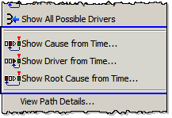
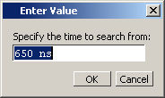

The Causality
Traceback feature allows you to initiate a trace to the cause of
a signal event from any arbitrary time.
Prerequisites
Run the simulation.
Procedure
- Click and hold the Show
Cause button until the drop-down menu appears (Figure 1).
Figure 1. Selecting a Specific
Time for a Trace
You can specify an event time
and trace to:
the first sequential process
(Show Cause from Time)
the immediate driving process
(Show Driver from Time)
the root cause (Show
Root Cause from Time)
When you make any one of these
three selections, the Enter Value dialog box opens (Figure 2).
Figure 2. Enter Value Dialog Box
- Enter a starting time for
the causality trace.
- Click the OK button.